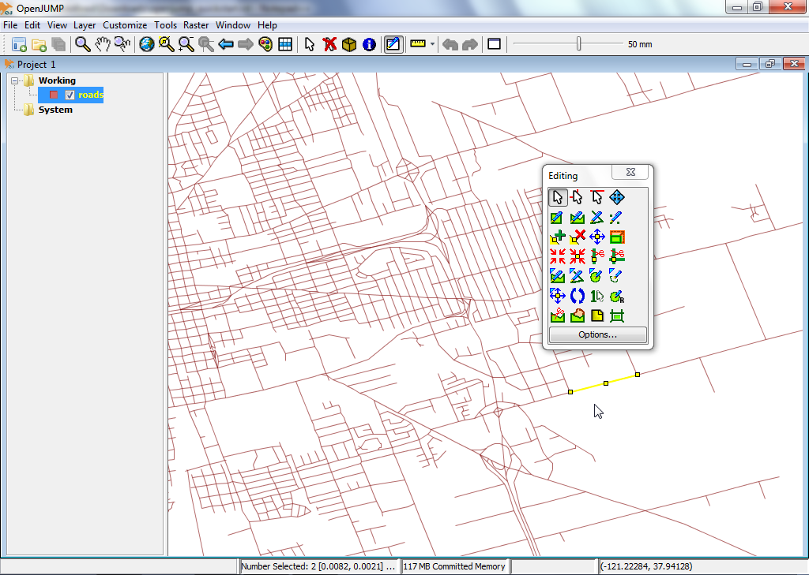

Guide de démarrage rapide avec OpenJUMP GIS¶
OpenJUMP est un programme SIG de bureau qui permet une visualisation et une édition faciles des données SIG vectorielles. L’édition PLUS soutient également l’analyse des données raster.
Contents
Démarrer OpenJUMP¶
Sur le bureau, choisissez .
L’interface utilisateur OpenJUMP dispose de quatre (4) composants de base.
- [1] Le premier est une barre de menu de haut niveau pour accéder à la plupart des fonctionnalités.
- [2] La seconde est une barre d’outils principale qui se trouve juste en dessous de la barre de menu. Les boutons donnent accès aux fonctions d’affichage et de navigation les plus importantes.
- [3] Le troisième est une vue d’arbre sur la gauche qui montre la liste de couche du projet actif.
- [4] Le quatrième est la vue de carte. Il s’agit de la carte réelle où une représentation graphique des données spatiales dans chaque couche est donnée.
Enfin, il y a une barre d’information en bas affichant les coordonnées du pointeur de souris, les rapports de traitement et l’utilisation de la mémoire. Une fenêtre de projet contient une liste de couches et une vue de couche. Chaque instance d’OpenJUMP peut contenir plusieurs projets. Dans ce démarrage rapide, nous ne travaillerons qu’avec une seule fenêtre.

Ouvrez un shapefile ESRI¶
- Sur la barre de menu de haut niveau dans OpenJUMP, sélectionnez . Cela vous présentera une boîte de dialogue qui vous permet d’ouvrir des fichiers contenant des données géospatiales.
- Recherchez un shapefile ESRI. Recherchez un fichier avec l’extension .shp (par exemple sur le LiveDVD sous /home/user/data/natural_earth2/ne_10m_admin_0_countries.shp).
- Sélectionnez le fichier et cliquez sur le bouton Finish sur le dialogue. Après quelques instants, vous pourrez voir les données de votre shapefile dans la vue carte. Vous verrez également une nouvelle couche créée pour vos données dans la liste des couches. Le nom de la couche correspondra au nom du shapefile.

Astuce
Une autre option plus rapide est de faire un cliquer-glisser directement de votre shapefile dans la vue couche.
Styliser une couche¶
- Dans la liste des couches, cliquez à droite sur le nom de la couche. Cela montrera un menu déroulant.
- Choisissez de . La boite de dialogue Styles a cinq (5) onglets qui vous permettent de modifier la façon dont la couche est affichée dans la vue carte. Cela comprend la modification de la couleur du trait, la couleur de remplissage, le style de ligne et l’épaisseur de la ligne, la transparence, l’ajout d’étiquettes, et la détermination à quelles échelles maximales et minimales la couche est affichée.


Modifier les géométries des entités d’une couche¶
Dans la liste des couches, cliquez à droite sur le nom de la couche. Cela montrera un menu déroulant.
Cliquez sur l’entrée du menu « Editable » afin qu’une marque de contrôle soit affichée. Cela ouvrira une nouvelle barre d’outils flottante au-dessus de la vue carte sur le côté droit. Cette barre d’outils dispose d’un ensemble de boutons que vous pouvez utiliser pour modifier la géométrie d’une entité géographique.


Essayons une modification rapide. Nous devons d’abord sélectionner une géométrie, puis déplacer un point de la géométrie. Pour ce faire, nous cliquons d’abord sur le bouton qui affiche un curseur de souris dans la barre d’outils d’édition (bouton supérieur gauche).
Activez-le et cliquez sur une seule entité dans la vue Carte pour la sélectionner. Si la sélection a fonctionné, alors la couleur du contour de l’entité devrait changer en jaune et des petits carrés jaunes apparaitre à chaque point d’angle (vertex) dans la géométrie de l’entité.
Ensuite, cliquez sur le bouton qui montre un réticule bleu avec un carré jaune au milieu, le Move Vertex Tool (survoler les boutons vous donne une description des boutons). Vous devriez maintenant voir votre curseur de souris changer pour un petit réticule noir lorsque vous le déplacez sur la vue carte.

Essayez de l’utiliser pour déplacer l’un des vertices/points de la géométrie que vous avez sélectionnée auparavant en cliquant sur l’un des vertices et en le faisant glisser (en laissant le bouton de la souris appuyé).

{kind=link}
Ensuite ?¶
Ce n’est que la première étape sur la voie de l’utilisation d’OpenJUMP. Il vous reste encore beaucoup de matériel à découvrir.
- Vous pouvez télécharger des tutoriels pour OpenJUMP ici: https://sourceforge.net/projects/jump-pilot/files/Documentation/
- Vous pouvez lire le wiki OpenJUMP ici: http://ojwiki.soldin.de/index.php?title=Main_Page
- Vous pouvez obtenir de l’aide rapidement sur la liste de diffusion des utilisateurs d’OpenJUMP : https://groups.google.com/forum/#!forum/openjump-users
- La dernière version d’OpenJUMP est disponible ici : https://sourceforge.net/projects/jump-pilot/files/OpenJUMP/